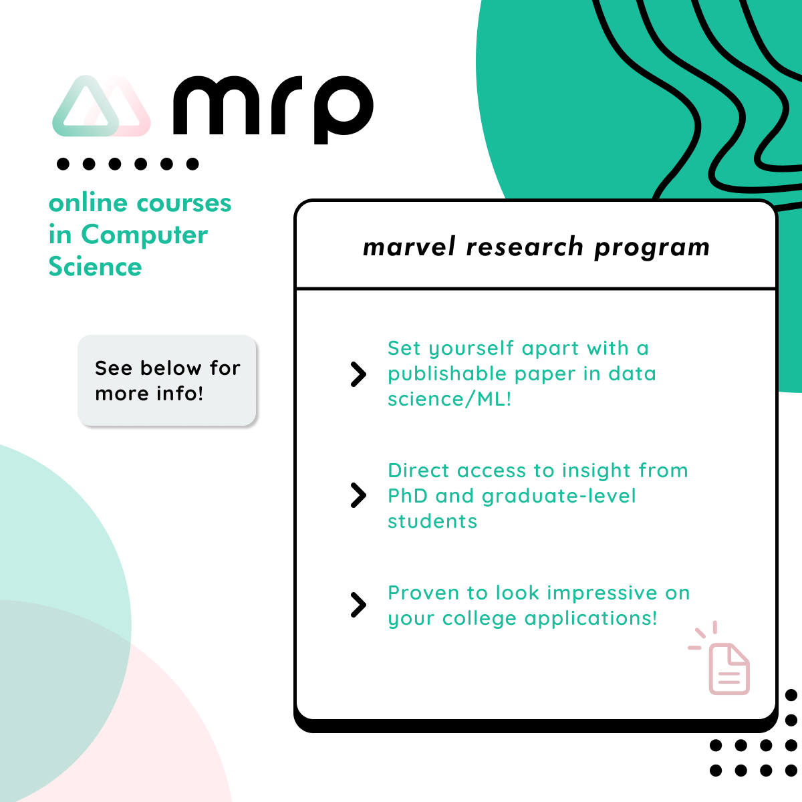

Set yourself apart from others by conducting novel research on/using ML and AI!
Your GPA, SAT/ACT, extracurriculars, and essays all matter to your college applications, but nothing makes a student stand out more than research they conducted themselves. Research can be used not only on their record/resume for apps, but as part of their essays to provide schools with a better idea of who the student is.
Proven to improve how you look on your college applications!
A significant number of high school applicants to top tier schools engage in some form of research, whether through independent projects, internships, or collaborations with universities or professionals. This is because it can demonstrate a commitment to learning, a passion for a particular subject, and the ability to engage in the research project independently.
Direct access to insight from PhD and graduate-level students, as well as university staff seminars!
The staff that created and run the Marvel Research Program are all university-level students/graduates, with some in PhD or graduate programs as well. Students in our research program will have access to office hours with them as well as periodic seminars by professors in the field!
Why MRP?
> We are unobtrusive as possible during the semester because we know that APs and other classes and extracurriculars are
there, and we know that being balanced is of utmost importance for students.
> We provide customized care to each student that is in our program by evaluating each student’s strengths and interests,
unlike other programs which tend to be cookie-cutter and standardized.
> We look at the forefront of research topics through the eyes of current PhD and graduate students, and prioritize the
student’s personal interests and passions while guiding them through utilizing CS tools for their research.